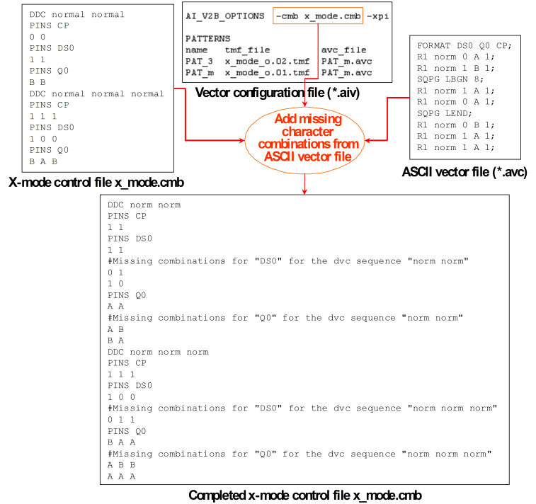

Adapting the X-Mode Control file to the ASCII Vector Files
The x-mode control file must satisfy two (possibly conflicting) requirements. Its primary purpose is to restrict the number of state character combinations for which a waveform and a timing map file entry are created, so that the maximum number of waveforms is not exceeded. But on the other hand, it must contain all state character combinations that actually occur in the ASCII vector files to which the timing is to be applied. Otherwise the vector translation will fail. X-mode control files that do not fulfill this latter requirement can be completed automatically.
The vector translation can be put into a special mode, where it does not create a binary vector file, but checks a given x-mode control file against (or creates a new x-mode control file from) the ASCII vector files that are implicitly or explicitly associated with the patterns in the vector configuration file (*.aiv). If any state character sequences that occur in one of the ASCII vector files are found missing in the specified x-mode control file, the vector translation will add them. The x-mode is inferred from the timing map files that must be specified in the PATTERNS section of the vector configuration file; in certain cases pattern configuration files (see The Pattern Configuration File (*.vbc)) must also be present.
The option which puts the vector translation into this mode is -cmb. It must be specified as a global option in the AI_V2B_OPTIONS section, and cannot be activated for individual patterns.
How to proceed
The typical use model will be as follows:
- Define a rudimentary x-mode control file with one entry for every combination of ASCII device cycle and x-mode.
- Specify the -cmb option with this x-mode control file in the global configuration file.
- If necessary, specify the x-mode control file with the -k parameter in the ait call.
- Run the timing translation.
- Run the vector translation with the generated vector configuration file.
- Remove the -cmb option from the global configuration file.
- Run the entire translation again with the completed x-mode control file.
Example
The following figure shows an example for amending a given x-mode control file:

Note that you must activate ASCII vector padding before sequencer instructions explicitly with -xpi to provide the combinations AAA and ABB.